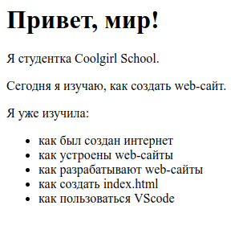

Почему я заинтересовалась web-разработкой
Веб-разработка - это одна из самых популярных областей программирования в наши дни. Многие люди, как я, выбирают эту область из-за ее важности и практической применимости. Я хотела бы поделиться, почему выбрала именно эту область.
- Первая и наиболее важная причина - это легкий доступ к обучению. Для того чтобы начать изучать веб-разработку, не нужно иметь высшее образование или специальное обучение в этой области.
- Вторая причина - это огромное количество возможностей для развития и карьерного роста. Сегодня веб-технологии используются повсеместно, от создания сайтов и мобильных приложений до разработки приложений для Интернета вещей. Это значит, что если вы хотите работать в этой области, то у вас будет много возможностей для того, чтобы выбрать направление, которое вам наиболее интересно, и развиваться в этом направлении.
- Третья причина - это возможность создания чего-то своего и полезного. Веб-разработка дает возможность создавать сайты и приложения, которые могут помочь людям в решении их повседневных задач, упрощать им жизнь и улучшать качество жизни. Когда вы создаете что-то свое, что может быть полезным для других людей, это приносит удовлетворение и чувство достижения.
- И, наконец, четвертая причина - это творческая свобода и возможность самореализации. Когда вы занимаетесь веб-разработкой, вы имеете возможность выразить свою креативность и фантазию через разработку сайтов и приложений. Вы можете создавать уникальные и инновационные продукты, которые могут привлекать пользователей и вызывать у них положительные эмоции. Это позволяет не только достигнуть профессионального роста, но и получать удовольствие от своей работы.
Для обучения я выбрала школу CodeGirl.
В первом разделе обучения я узнала о сайтах, об их разработке, о редакторах кода и системах контроля версий. Я научилась использовать Visual Studio Code. А также я самостоятельно создала свою первую html-страничку.
